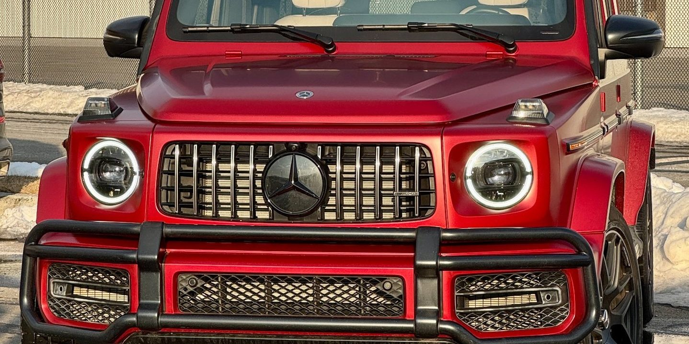
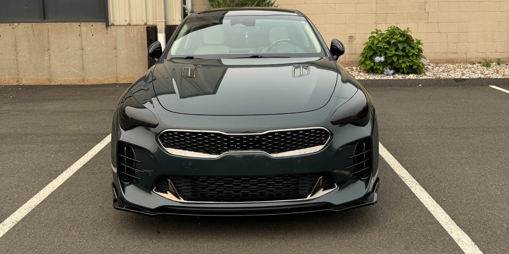

Body Kits & Widebody
Full kits, overfenders and widebody conversions test-fitted, corrected, painted to code and mounted with the gaps set right.
↗Body kits, splitters, spoilers, diffusers, carbon fiber components and lighting upgrades — fitted, aligned and finished properly, not bolted on and left crooked.
Aftermarket body components almost never fit straight out of the box. What separates a build that looks factory from one that looks bolted on is the hours spent test-fitting, trimming and aligning before anything is painted or mounted.
Panel gaps, mounting points and body lines vary between production runs, and aftermarket parts are made to a general spec. A splitter that sits a quarter inch proud on one side, or a spoiler whose paint does not quite match the trunk, undoes the entire look no matter how expensive the part was.
We test-fit components on the vehicle first, mark and correct the fitment issues, then finish and mount. Painted components are color-matched to your vehicle's code and adjusted for age, the same way a collision repair panel would be.
The other half of the job is knowing what to say no to. Some kits are designed for a different market variant, some parts interfere with sensors, radar or airflow the vehicle actually needs, and some combinations look worse together than either would alone. We tell you that before you buy, not after it is sitting in the shop.
Because we are a collision shop first, painting, panel work and fitment corrections all happen in-house rather than getting subcontracted out. That is usually where a build loses time and consistency.
One component or a complete exterior program.
Full kits, overfenders and widebody conversions test-fitted, corrected, painted to code and mounted with the gaps set right.
↗Front lips, splitters and canards fitted and aligned so they sit level and follow the bumper line correctly.
↗Trunk and roof spoilers, ducktails and rear diffusers, painted to match or finished in carbon or gloss black.
↗Hoods, mirror caps, trim pieces and aero parts in real or wrapped carbon, with clear coat protection where appropriate.
↗Aftermarket headlight and taillight assemblies, sequential signals, underglow and accent lighting, wired properly rather than spliced.
↗Select bolt-on work coordinated alongside the cosmetic build, or referred to a trusted specialist when it is outside our lane.
↗Not every kit fits the vehicle it claims to. Some are made for a different market variant, some block radar and parking sensors, and some combinations of parts fight each other visually. A shop that just installs whatever shows up in the box is not doing you a favor. We would rather flag the problem before you have paid for the part than after it is on the lift.
We go over what you want the finished car to look like, what parts you have or are considering, and what will actually work on your vehicle.
Components are mounted unfinished so fitment problems surface before paint, not after.
Fitment is corrected, then parts are prepped and painted to your color code or finished in the chosen material.
Everything is mounted, gaps are set, hardware is secured and the finished vehicle is inspected before you see it.
Looking for custom build or body kit installation near North Haven, CT? Exclusive Auto Lab handles body kits, widebody conversions, splitters, spoilers, diffusers, carbon fiber components and lighting upgrades with in-house paint and fitment work.
A build usually runs alongside wraps, tint, lighting tint and wheel work. Planning the whole thing at once means one visit, one consistent finish and a vehicle that reads as designed rather than accumulated.
Serving North Haven, New Haven, Hamden, Wallingford, Cheshire, Branford, East Haven, West Haven, Meriden and surrounding Connecticut communities.
Yes, and plenty of customers do. Bring us the parts and we will test-fit before committing to paint. If a component turns out not to fit your vehicle properly, you will hear that from us early rather than after it is installed crooked.
Painted components are matched to your factory color code and adjusted for age and fade, the same process used on collision repair panels. Unpainted or primered parts have to be finished properly or the color difference will be obvious in daylight.
They can. Front bumpers and lips often sit in front of parking sensors and adaptive cruise radar, and rear diffusers can interfere with rear sensors. This is one of the things we check during test fitting, because a car that throws sensor faults after a build is a real problem.
It varies enormously. A spoiler is a short job. A full widebody conversion with paint is a multi-week project. Parts availability is usually the biggest variable, especially on anything imported.
We handle select bolt-on modifications coordinated with the cosmetic build. Anything deeper into engine or drivetrain work we refer out to specialists we trust rather than pretending it is our specialty.
Permanent modifications are generally a bad idea on a lease. Reversible work like vinyl wraps, chrome delete, tint and PPF is the safer route, and bolt-on parts that can be removed and the originals refitted before turn-in are worth discussing case by case.
Reference images showing the kind of work involved. Follow our Instagram for current jobs coming through the shop.



Call, text photos, or request an appointment online. We will tell you what to expect before you bring the vehicle in.